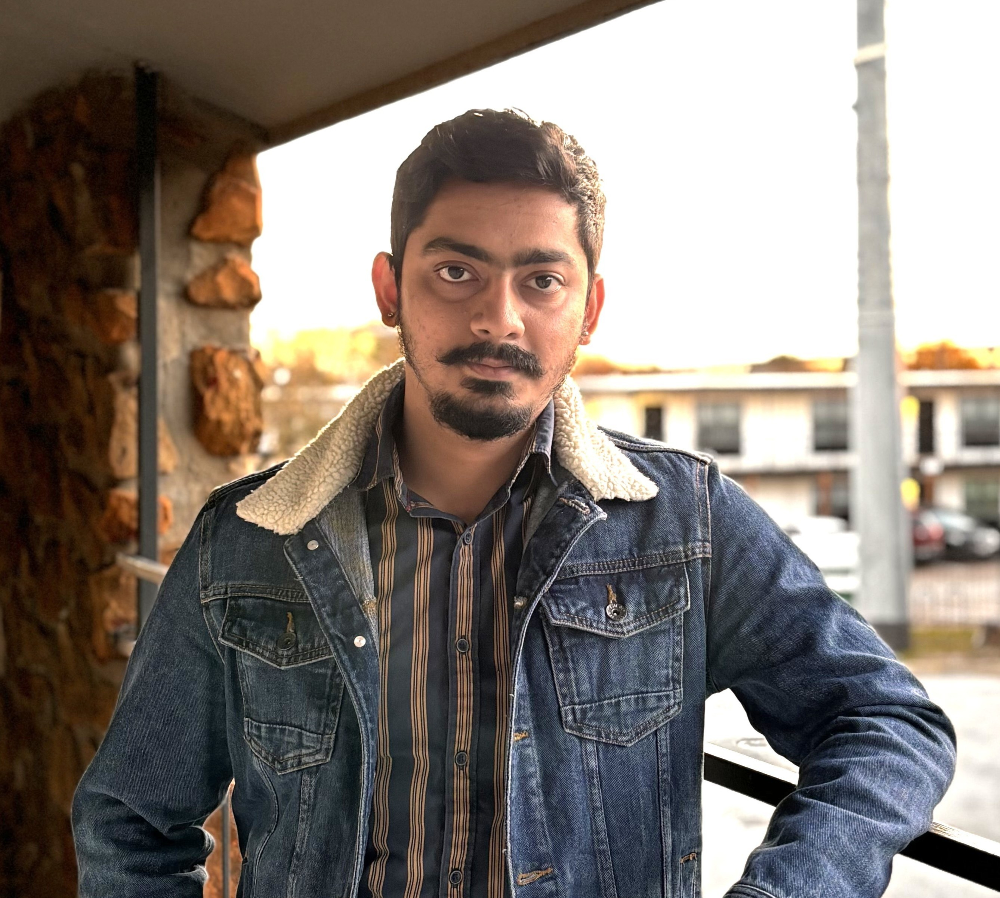
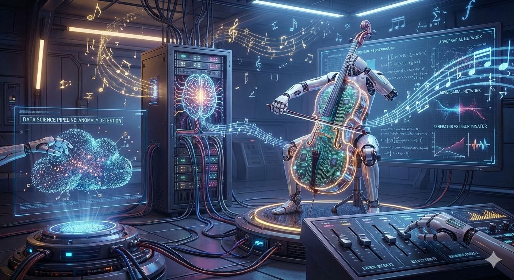
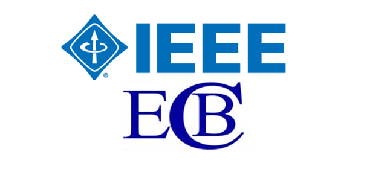
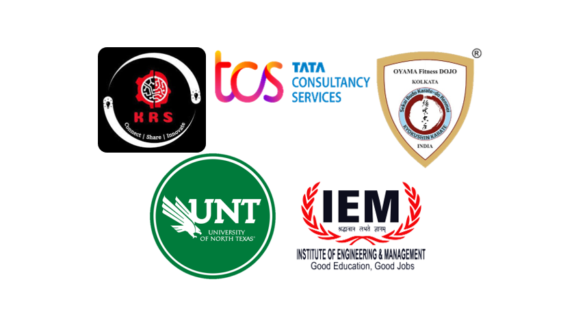
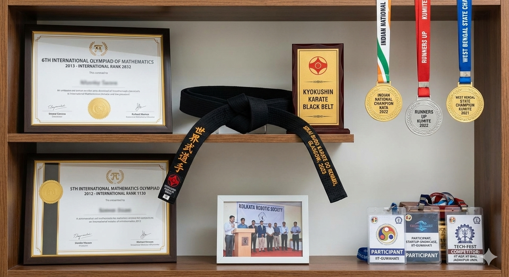
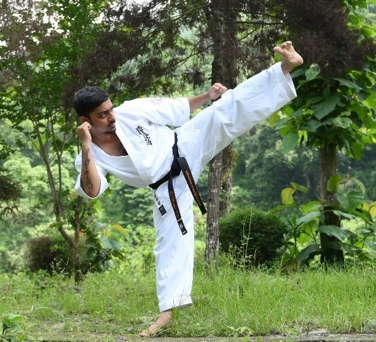

© 2020 SAMEEK BHATTACHARYA
Last Updated April 2026
Masters in AI @ University of North Texas
Former Research Assistant @ IEM - Former Systems Engineer @ TCS
B.Tech in Computer Science & Engineering
Black Belt in Kyokushin Karate

I am an enthusiast and lover of technology. Inclined towards music, fitness and games as well. Travelling the world and trying new food play a vital role in my life.
Curriculum Vitae
I am highly interested in exploring the field of Artificial Intelligence, with a strong focus on how data forms the foundation of intelligent systems. My interests include data science, where I aim to extract meaningful insights from data, and implement machine learning and deep learning, which enable prediction, visualization and decision-making. Within AI, I am particularly drawn to adversarial machine learning, computer vision, and audio signal processing, with an emphasis on building reliable and perceptive models. Additionally, my interest in robotics centers on translating data-driven intelligence into physical action, allowing intelligent systems to interact autonomously with the real world.
I am also interested in getting myself immersed in the astounding and harmonious world of Physics, Mathematics and Music.




© 2020 SAMEEK BHATTACHARYA
Last Updated April 2026